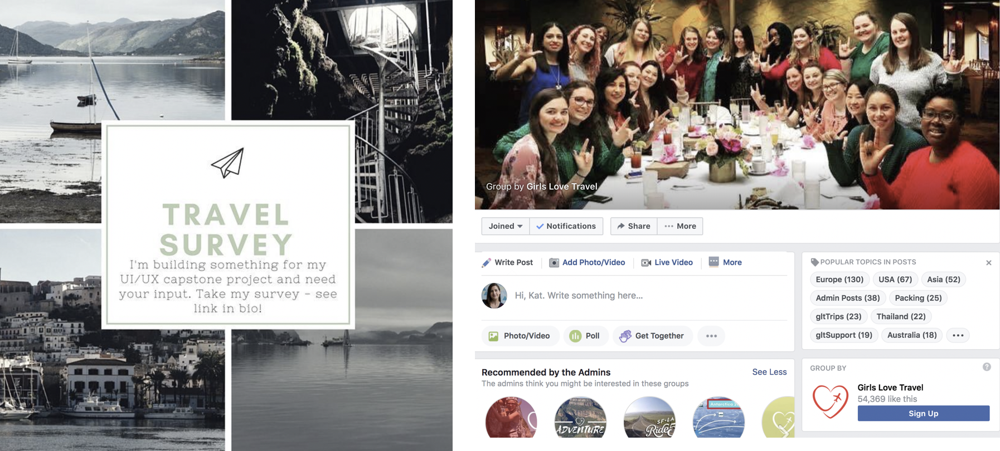
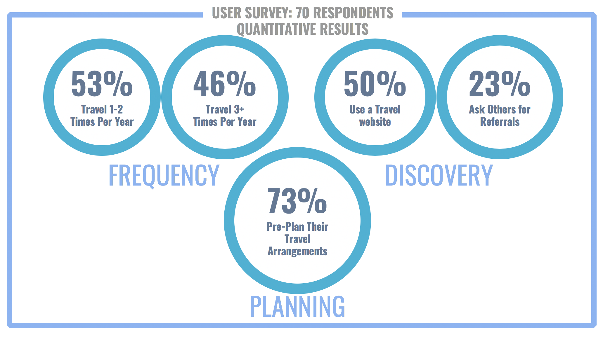
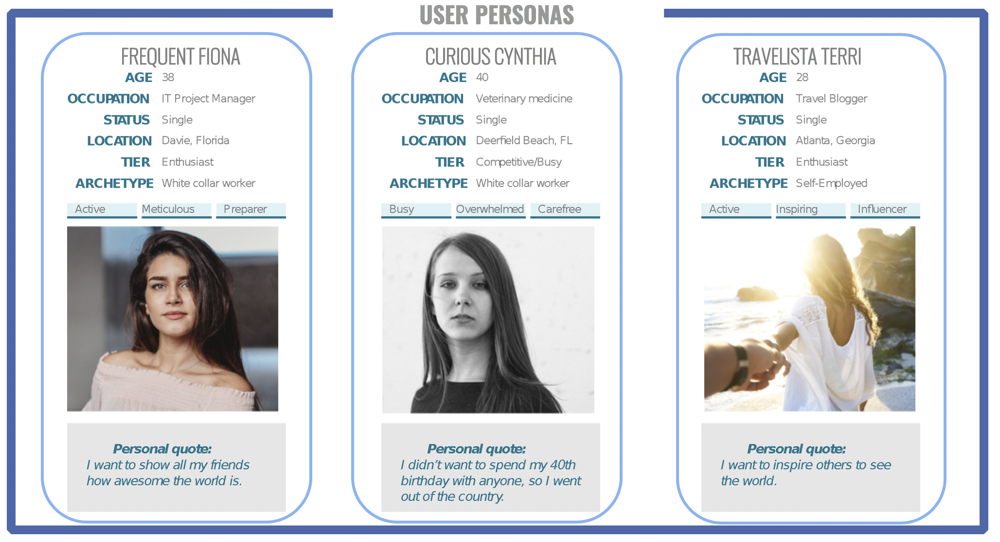
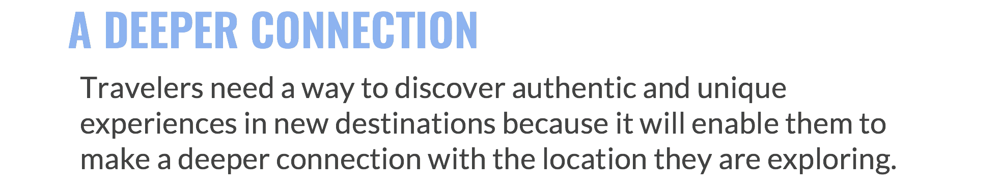
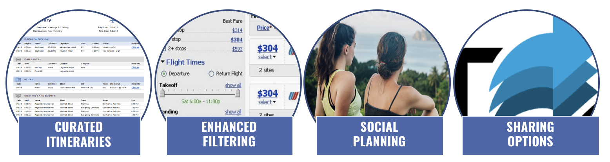
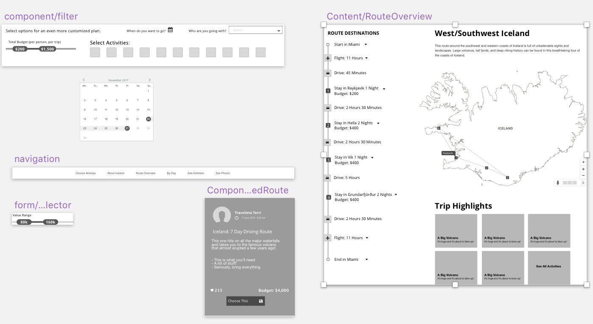
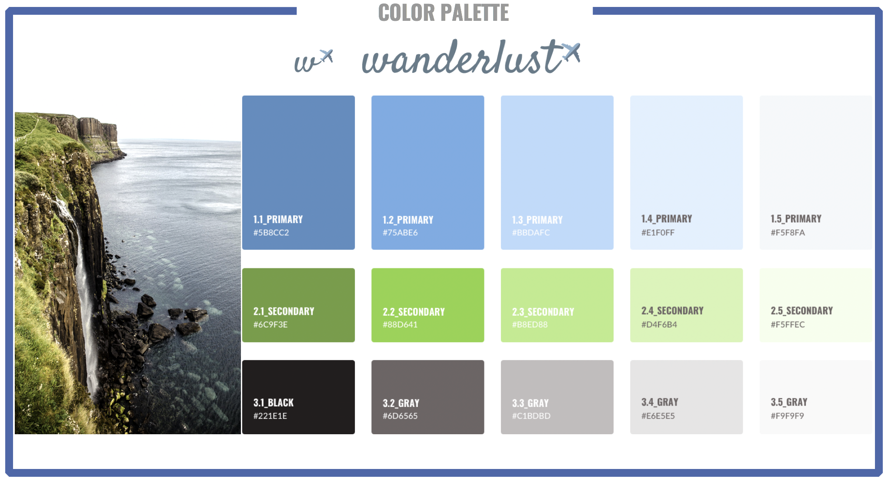
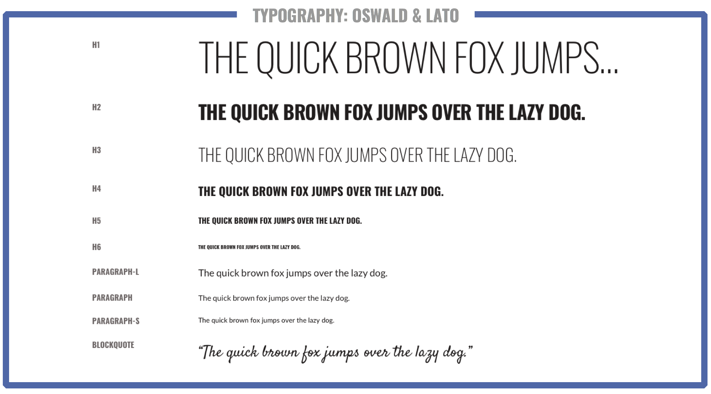
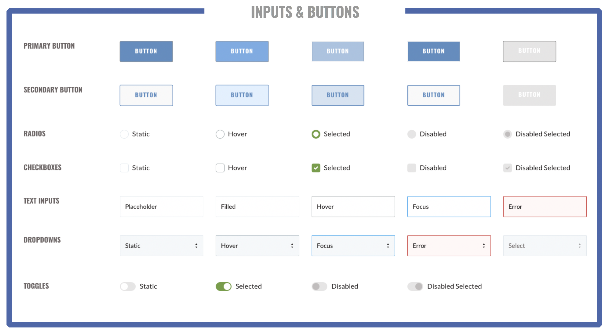

Project Idea
Before creating Wanderlust, I hypothesized that users would want something you can use to plan, book and share a trip so that others can 'follow' you along your journey or be inspired to take a journey themselves.
Research
Activities represent the third largest segment in the travel market, valued at $129B for FY2017. Additionally, online tours and attraction bookings will more than double from $9 billion in 2015 to $21 billion in 2020.
We are in an "experience" economy, where people are preferring to spend their money on experiences rather than material things.
Competitive Landscape
Features found in travel planning sites include online & mobile group planning, document storage and automatic activity planning through artificial intelligence, but sites lack user generated content and curated activities, resulting in a lack of trust, ultimately decreasing app usage.
User Research
Facebook interest groups provided easily targeted, desireable focus group participants. A specific travel group, Girls Love Travel, provided access to more than 50,000 active members for survey participation.
Results from surveying this targeted interest group indicated that users appreciate pre-planning their trips, but lack access to vetted, trusted influencer reviews on most of the known travel planning sites.
User Personas
Target users of Wanderlust include high frequency travelers wishing to gain a deeper connection with the locations they choose to travel to.
 Ideation
My proposed features for this focused more on social planning, including curated itineraries created by popular, trusted travel bloggers.

Wireframes were delivered as a prototype, which was used to quickly identify any pain points or items needing to be rethought.
Visual Design
Blues and greens provided a more relaxed, browsing-friendly atmosphere.
Legible fonts ensure accessibility and legibility for older eyes.
A design system was delivered, including state changes for buttons, warnings for field inputs, etc.
